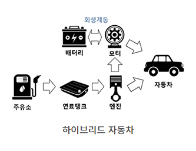
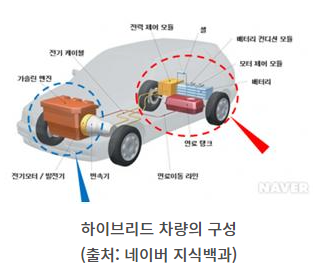
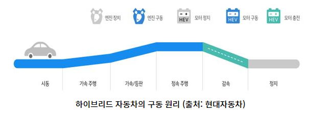

하이브리드(hybrid)란 이중, 혼합이라는 사전적 의미를 가지고 있습니다. 하이브리드 자동차는 전기와 가솔린 모두를 이용하는 자동차입니다. 오늘의 이야기는 내연기관 자동차와 전기자동차 그 사이의 포지션을 담당하고 있는 자동차인 하이브리드 자동차에 대해 소개해드리려고 합니다!
세계에서 가장 많이 팔린 하이브리드 자동차
여러분은 세계에서 가장 많이 팔린 하이브리드 자동차가 어떤 차인지 아시나요? 그 차는 바로 토요타(Toyota)에서 출시한 프리우스(Prius)라는 자동차입니다. 개발 당시 프리우스 프로젝트팀은 내연기관의 장점과 친환경 자동차, 이 두 마리 토끼를 잡기 위해 제작에 끊임없는 노력을 쏟았습니다. 그 결과 1995년 도쿄 모터쇼에서 프리우스 콘셉트가 처음으로 등장했고 1997년 출시되었습니다. 출시 초기 하이브리드 자동차에 대한 낯섦 때문에 판매 부진을 겪기도 하였지만, 대대적인 상품성 홍보를 통해 출시 초기 3,000대에서 1999년에는 3만대가 넘게 팔리는 쾌거를 이루기도 하였습니다. 2세대와 3세대 모델부터는 공기저항 계수를 기록적으로 낮추고 실내 내장재를 친환경적으로 변경하며 다른 제조사보다 경쟁력 강화를 꾀하였습니다. 이렇게 높은 상품성을 보인 프리우스는 2015년 누적 판매량 361만대를 기록하였습니다. 최근에는 더 나은 충전 성능을 지닌 배터리와 차체를 낮추어 더 낮은 저항계수를 만들어 내었습니다. 또한, 출시 이후에는 7,700만 톤에 달하는 이산화탄소 배출 억제 효과를 보여주며 하이브리드 자동차 원조의 입지를 다지고 있습니다.

하이브리드 자동차의 장단점
하이브리드 자동차의 장점과 단점에는 무엇이 있을까요? 우선 하이브리드 자동차의 가장 큰 장점은 높은 연비입니다. 하이브리드 자동차가 높은 연비를 자랑할 수 있는 이유는 가솔린 엔진과 전기모터가 적절하게 조화되어 있기 때문입니다. 하이브리드 자동차는 출발하거나 가속, 감속이 되었을 때에는 가솔린 엔진과 전기모터가 같이 사용되어 배터리를 저장하고 출력하며 연료 소모를 줄이는 기능을 가지고 있습니다. 또한 하이브리드 자동차는 자동차의 무게 중심 부분에 배터리가 들어가기 때문에 코너링이 안정적이며, 전기모터를 사용하기 때문에 엔진을 이용하는 내연기관 자동차보다 소음이 적은 특징이 있습니다. 정부에서 제공하는 각종 혜택이 있어 경제적인 측면에서도 큰 장점이 있습니다. 서울시의 경우 공영주차장 주차비 50% 할인과 대중교통 환승 주차장 80% 할인 혜택이 있으며, 전국 14개 공항에서는 전기자동차와 동일하게 주차요금 50% 감면 혜택이 있습니다. 또한 연료 사용량이 적어 화석연료를 많이 사용하지 않아 친환경적입니다.

그렇다면 하이브리드 자동차의 단점에는 어떤 것이 있을까요? 바로 하이브리드 자동차는 큰 엔진과 40kg이 넘는 배터리가 트렁크에 위치해 있기 때문에 트렁크의 용량이 적다는 단점이 있습니다. 최근에는 배터리를 트렁크 아래쪽에 위치시킴으로써, 트렁크 용량 증가가 가능해지기도 하였지만 아직까지 내연기관 자동차의 트렁크 용량보다는 작기 때문에 트렁크에 짐을 많이 싣고 다니는 사람들에게는 불편함을 유발할 수 있습니다. 두 번째, 단점은 전기모터와 대용량 배터리 탑재로 인한 비싼 가격입니다. 2019년형 쏘나타의 출시가는 2,288~3,287만 원 사이로 가격이 책정되었지만 2019년형 쏘나타 하이브리드의 경우 2,754~3,579만 원에 가격이 형성되어 있습니다. 이는 기존 내연기관 자동차보다 400만 원 이상 차이 난다고 볼 수 있습니다. 또한 하이브리드 자동차의 특성상 구조가 복잡하게 되어있기 때문에 사고가 났을 때 수리비용이 내연기관 차량보다 많이 발생하며 호환 가능한 부품을 구하기가 어렵다는 단점이 있습니다.
하이브리드 자동차의 원리와 연비

하이브리드 자동차에 대해 설명하는데 연비의 개념이 빠질 수 없겠죠? 연비는 단위 연료당 주행할 수 있는 거리를 뜻합니다. 하이브리드 자동차는 어떤 이유 때문에 고연비 자동차로 불리게 되는 것일까요? 그것은 하이브리드 자동차의 원리를 알면 이해가 가능합니다. 주로 하이브리드 자동차의 구동 원리는 크게 5가지로 구분이 가능합니다.첫 번째, 큰 구동력이 필요하지 않은 출발 상황이나 서서히 가속하는 상황에서 하이브리드 자동차는 전기모터를 사용하여 운행합니다. 두 번째, 오르막길을 오를 때나, 갑자기 속력을 내는 등 큰 구동력이 필요한 상황이 되면 엔진과 전기모터를 사용합니다. 세 번째, 고속 정속 주행 시에는 엔진만 사용하는 엔진 주행 모드가 됩니다. 네 번째, 감속이나 멈추는 상황에서 발생되는 에너지를 회생제동 브레이크 시스템을 통해 전기에너지로 전환시켜 배터리를 충전합니다. 다섯 번째는 정차 시 엔진이 정지됩니다. 이런 프로세스를 거치며 자연스레 연료 소모량이 줄어들고 고연비를 출력할 수 있게 되는 것입니다.이런 프로세스 이외에도 연비 효율을 더 향상시킬 수 있는 방법이 있습니다. 하이브리드 자동차는 전기자동차 모드 운행 구간이 늘어날수록 연료를 덜 사용하게 되어 연비가 높아지기 때문에 전기자동차 모드로 운전하고, 완가속 습관을 들이는 노력이 필요합니다. 또한 D단에서 제동하여 전기에너지를 충전하고, 완제동 습관을 들이는 등 회생제동 에너지를 활용하고, 에어컨 최적화 설정을 하여 전력 소모를 최소화하는 등 여러 방식을 통해 더 높은 연비 향상을 기대할 수 있습니다.
풀 하이브리드
하이브리드 자동차의 종류는 크게 풀 하이브리드, 마일드 하이브리드, 플러그인 하이브리드로 구분할 수 있습니다. 먼저 풀 하이브리드부터 설명해보면, 풀 하이브리드는 동력 전달 구조에 따라 직렬, 병렬, 직병렬 방식으로 또 한 번 구분이 됩니다.풀 하이브리드(full hybrid)의 직렬식 하이브리드 시스템은 일반 하이브리드 자동차와 동일한 구조로서 엔진은 발전기를 구동하고, 발전기에서 생산된 전기로 모터를 구동하는 방식입니다. 엔진은 전기를 생산하는 발전기로서의 역할만을 수행하며 자동차 구동에 영향을 주지 않습니다. 동력 전달 과정은 엔진 → 발전기 → 배터리 → 모터 → 변속기 → 구동바퀴 순으로 전달됩니다. 하이브리드 자동차 내 인버터(inverter)는 교류발전기에서 생산된 교류를 직류로 변환시켜 축전지에 저장시키고, 전기모터를 구동할 때는 다시 직류에서 교류로 변환시키며 저장과 공급을 하는 역할을 합니다. 직렬식 하이브리드 시스템은 엔진이 발전기로서의 역할만하기 때문에 연료 소비율이 적고 배기가스 저감 효과가 있다는 장점이 있습니다. 하지만 이는 장점인 동시에 단점이 되기도 합니다. 엔진 없이 모터로만 구동력을 만들어 내야 하기 때문에 높은 효율의 모터가 필요로 되며 이것은 엔진과 배터리 모터 무게의 증가를 의미하기도 합니다. 따라서 자동차가 무거워져 가속 성능에 문제가 생기게 된다는 단점이 있습니다.그렇다면 풀 하이브리드의 병렬식 하이브리드 시스템은 어떨까요? 엔진과 모터가 따로 기능을 했던 직렬식 하이브리드와 다르게 병렬식 하이브리드는 모터와 엔진의 힘을 합해 구동력을 만들어내는 시스템입니다. 거의 대부분의 하이브리드 자동차에는 이 방식이 사용된다고 볼 수 있습니다. 병렬식 하이브리드 시스템은 낮은 속도에서는 전기모터만을 이용해 구동력을 만들어내다가 일정 속도를 넘어가면 내연기관 엔진이 구동력을 만들어 가속 시 성능을 높일 수 있습니다. 동력 전달 과정으로 기계 에너지는 기관 → 변속기 → 구동바퀴 순서로 전달되고, 전기는 배터리 → 전동기 → 변속기 → 구동바퀴 순서로 에너지가 전달됩니다. 병렬식 하이브리드 시스템은 엔진과 모터 둘 다 동력원으로 사용되기 때문에 저성능 모터와 저용량 배터리를 사용해도 되며 이로 인해 무게가 가벼우며 효율이 직렬식 시스템보다 더 우수하다는 장점이 있습니다. 하지만 모터의 성능이 약하며 모터 작동 시 배터리 충전이 되지 않는 단점도 존재합니다.마지막으로 소개할 풀 하이브리드의 직병렬식 시스템은 직렬식 시스템과 병렬식 시스템의 장점을 혼합한 시스템입니다. 따라서 엔진이 구동과 발전을 같이 하는 역할을 수행하며 배터리 팩이 충분히 충전되어 있는 상태에서 저속 주행 시 모터만으로도 구동이 가능하다는 게 특징입니다. 또한 큰 가속력이 필요할 때는 엔진과 모터가 힘을 합하여 구동력이 우수합니다. 하지만 대형 발전기와 배터리 팩이 필요하며 복잡한 시스템으로 되어 있어 원가가 높고 차체 중량이 늘어나는 단점이 있습니다.
마일드 하이브리드
이제 풀 하이브리드에 대해 알아보았으니 마일드 하이브리드(mild hybrid) 자동차에 대해서도 알아보겠습니다. 마일드 하이브리드 자동차는 엔진과 전기모터 모두를 사용하지만 서로의 역할이 다릅니다. 엔진은 구동력을 이끌어내고 전기모터는 엔진을 보조해주며 작업량을 덜어주는 역할을 합니다. 마일드 하이브리드 자동차의 장점은 배터리와 모터의 출력이 작아 설계 단가가 낮아짐으로 인해 풀 하이브리드나 플러그인 하이브리드보다 차량 가격이 저렴하다는 것입니다. 하지만, 친환경 자동차 환경보조금 혜택은 따로 제공되지 않습니다. 또한 전기모터는 동력을 거들어주는 역할만 하기 때문에 연비를 15%밖에 절감해주지 못한다는 단점이 있습니다.
플러그인 하이브리드
마지막으로, 플러그인 하이브리드(plugin hybrid) 자동차는 어떤 특징이 있을까요? 플러그인 하이브리드 자동차는 전기자동차와 하이브리드 자동차가 혼합된 형태입니다. 외부 전력으로 충전한 배터리로 운행하다가 배터리가 다 소모되면 내연기관 엔진과 전기동력을 동시에 사용합니다. 엔진이 주이고 전기모터가 보조 역할을 했던 마일드 하이브리드 자동차와 달리 플러그인 하이브리드 자동차는 전기모터가 주가 되고 엔진이 보조 역할을 합니다. 플러그인 하이브리드 자동차는 가까운 거리는 전기를 이용해서 갈 수 있다는 장점이 있습니다. 하지만 플러그인 하이브리드 자동차들은 일반 하이브리드보다 훨씬 큰 대용량 배터리를 사용하여 연비가 저하된다는 단점이 있으며, 아직 충분히 구축되어 있지 않은 전기자동차 충전 시설을 찾아 충전해야 함으로 충전 시 불편을 야기할 수 있습니다.